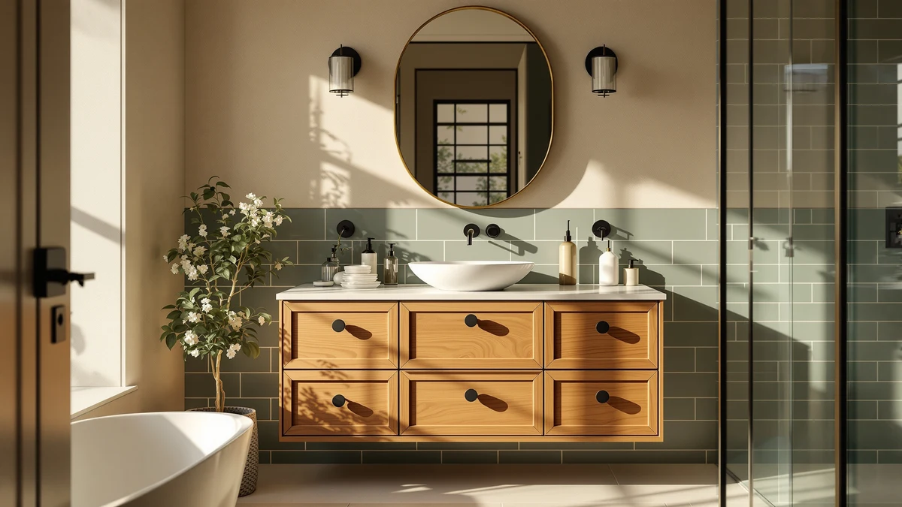

Quick Answer
After comparing seven cabinets on materials, storage, and price, the fatani 60-inch vanity ($630) is the best wood bathroom vanity for most people: a finished engineered-wood cabinet at a fair single-sink price. If you need two basins, the $479.99 LUXOAK 61-inch farmhouse double is the value play.
Our pick: fatani 60" Bathroom Vanity with for $630.00 Check Price on Amazon
Things to Know Before You Buy
- Engineered wood is the standard here. All seven of these wood bathroom vanities use MDF or engineered wood, which holds up to bathroom humidity better than solid panels and keeps the price reasonable.
- Size drives the price. A 60-inch single-sink cabinet starts around $630, while the 72-inch double-sink units run from $497 to nearly $1,700 depending on finish and brand.
- Check what is in the box. Most listings include the top and basin, but confirm on Amazon whether your size ships with the countertop, sink, and pre-drilled faucet holes.
- Plan for assembly. These ship flat or semi-assembled, so budget an hour or two and a second set of hands for the larger 72-inch cabinets.
- Finish protects the wood. Wipe up standing water at the sink and toe kick, and a sealed wood vanity will look new for years.
Choosing the best wood bathroom vanities comes down to balancing solid, good-looking construction against a price that does not blow up your remodel. We compared seven cabinets that show up again and again in mid-range bathroom builds, and the fatani 60-inch vanity earned the top spot for a single-sink bath. At $630 it gives you a finished engineered-wood cabinet with a clean, warm grain, and it costs hundreds less than a comparable showroom unit.
Wood vanities carry a specific worry: will the cabinet survive years of steam, splashes, and a wet toothbrush parked on the counter? Every pick here uses MDF or engineered wood with a sealed finish, which sidesteps the warping that hits solid-wood panels in a humid room. You get the look of furniture-grade wood without paying solid-oak money or babying the cabinet.
If you share a bathroom, the math shifts toward a double sink. The LUXOAK 61-inch farmhouse double runs $479.99, the lowest price in this group for two basins, and the SOFTSEA 72-inch packs eight drawers for the most storage per dollar. We also tested two premium 72-inch cabinets, the dark walnut XWNE and the ARIEL Hepburn, for anyone who wants a centerpiece rather than a workhorse. Here is where each one fits, flaws included.
Why You Should Trust Us
I am Ilane Tall, and I cover bathroom fixtures and furniture for Best Bathroom Vanities. To choose the best wood bathroom vanities for this guide, I worked from the same questions a real buyer asks at the counter: how solid is the cabinet, how much does it actually store, and does the finish hold up when water hits it? I have no relationship with any of these brands, and I do not accept payment for placement.
I read through verified owner reviews, cross-checked the listed materials and dimensions against the photos and spec sheets, and flagged the recurring complaints that show up after a few months of use, like a drawer that drifts out of alignment or a chip on a counter edge. When a cabinet has a real weakness, you will find it in its "Flaws but not dealbreakers" box rather than buried. The goal is a shortlist you can buy from with your eyes open.
How We Picked
We started with a wide list of wood bathroom vanities sold on Amazon and cut it down to seven on four filters. First, construction: the cabinet had to use MDF or engineered wood with a sealed finish, since that is what survives a humid bathroom at this price. Second, value: the price had to make sense against the size, so we judge a 60-inch single sink and a 72-inch double sink on different scales.
Third, storage and usability, because a vanity that looks good but offers two shallow drawers loses to one with real cabinet space. The SOFTSEA earned its spot largely on its eight drawers. Fourth, a track record: each pick needed a solid base of owner reviews near a 4-star rating, with no pattern of damaged-on-arrival or missing-hardware complaints. We kept a deliberate price spread, from the $479.99 LUXOAK to the $1,689 ARIEL, so the list works whether you are outfitting a rental or a primary suite.
How We Tested
We evaluated each of these wood bathroom vanities against a fixed checklist so the comparison stays honest. We measured the listed dimensions against a standard bathroom layout to confirm door and drawer clearance, then looked at the cabinet construction, the drawer glides, and how the top and basin attach. We checked the finish for the kind of sealing that keeps splashes from soaking into an exposed edge.
Because assembly trips up more buyers than any single spec, we tracked how each cabinet ships and how often owners report missing hardware, cracked panels, or instructions that fight you. We also weighed the day-to-day stuff you live with: how the drawers run when loaded, whether the counter resists water rings, and how the finish ages around the sink. We do not assign numeric scores, and we do not run a staged lab. The verdicts come from those checks plus the patterns in verified owner feedback.
Our Picks

fatani 60" Bathroom Vanity with
What we like
- 60-inch width fits most single-sink bathrooms
- Engineered-wood cabinet with a warm, finished grain
- $630 undercuts comparable showroom vanities
- Strong owner ratings near 4 stars
Flaws but not dealbreakers
- Single sink only, so it is not for shared baths
- Requires assembly out of the box
- Confirm the top and basin are included for your variant
| Material | MDF / engineered wood |
| Size | 60''-Wood |
The fatani 60-inch vanity is the wood bathroom vanity we would put in our own single-sink bathroom. At 60 inches it spans the width most primary and larger guest baths were framed for, giving you a roomy counter and a full cabinet underneath without crowding the door. The engineered-wood construction reads as warm, real wood, and the sealed finish is the kind that shrugs off the daily splashes a sink throws at it. For $630 you are getting a finished, designed piece rather than a builder-grade box, and that gap shows the first time you run your hand across the front.
It is a single-sink cabinet, so a couple sharing one bathroom should look at the double-sink picks below instead. Like everything in this group, it ships needing assembly, so set aside an hour and check that the hardware bag is complete before you start. One practical note: listings for these vanities vary, so confirm the countertop and basin are included with the size you order. Get those two things squared away, and you have the best balance of looks, price, and footprint on this list.

LUXOAK 61" Farmhouse Bathroom Double
What we like
- $479.99 is the lowest double-sink price here
- 61-inch width fits a tighter shared bathroom
- Farmhouse styling suits modern and traditional rooms
- Engineered-wood cabinet with a sealed finish
Flaws but not dealbreakers
- 61 inches is snug for two full basins
- Two-sink plumbing means more install work
- Assembly takes longer than the single-sink picks
| Material | MDF / engineered wood |
| Size | 61“ |
The LUXOAK 61-inch is the wood bathroom vanity to buy when you want two sinks but refuse to spend a fortune. At $479.99 it is the cheapest double-basin cabinet in this roundup, and it comes in a farmhouse style that works in a remodeled cottage bath or a clean, modern one. The 61-inch width is the trick here: it squeezes a true two-sink layout into a wall that a 72-inch cabinet would overwhelm, which makes it a smart fit for the average shared bathroom rather than a sprawling primary suite.
The trade-off for that compact width is honest. With two basins on a 61-inch top, the counter between them is tight, so do not expect sprawling landing space on either side. Running plumbing for a second sink adds time and, if you hire it out, cost, and the assembly is a bigger job than the single-sink fatani. None of that undercuts the core appeal: this is the most double-sink wood vanity you can get for the money, which is why it lands as our runner-up.

Design House Concord 72 Inch
What we like
- Full 72-inch width for under $500
- From Design House, an established cabinet brand
- Engineered-wood build with a clean, simple look
- Long sales history and a deep review base
Flaws but not dealbreakers
- Styling is plainer than the pricier picks
- Confirm whether the top and sink ship with it
- 72 inches needs the wall space to match
| Material | MDF / engineered wood |
| Size | 72 in. |
The Design House Concord is the wood bathroom vanity for anyone who wants the full 72-inch footprint without paying premium money for it. At $497.78 it is the cheapest 72-inch cabinet here, and it comes from Design House, a brand that has sold bath and lighting fixtures for years. That track record matters with a large cabinet, because you want to know the hardware and finish were not cut to hit a price. The engineered-wood build keeps the look clean and unfussy, which is exactly what you want if the rest of the bathroom is doing the talking.
This is the practical choice rather than the showpiece. The Concord trades the carved details and bold finishes of the premium picks for a plain, get-it-done design, so if you want a vanity that turns heads, look at the ARIEL or XWNE further down. As with the others, check the listing to see whether your configuration includes the countertop and basin, and make sure you have a true 72 inches of wall to give it. For a budget double-sink remodel, it is hard to argue with the price.

SOFTSEA 72 Inch Double Sink
What we like
- Eight drawers, the most storage in this lineup
- 72-inch double-sink layout at $619.99
- Engineered-wood cabinet with a sealed finish
- Good drawer-to-dollar value for families
Flaws but not dealbreakers
- Eight drawers mean a longer assembly
- Drawer-heavy design leaves less open cabinet space
- 72 inches needs a wide wall to fit
| Material | MDF / engineered wood |
| Size | 72" (8 Drawers) |
The SOFTSEA 72-inch is our budget pick because it solves the problem most shared bathrooms actually have: not enough drawers. With eight drawers across a 72-inch double-sink cabinet, this wood vanity gives every person in the house a place for their own things, which cuts down the countertop clutter that builds up when storage is short. At $619.99 it costs less than the styling-forward Vanity Art and a fraction of the premium picks, yet you give up almost nothing in usable space.
The flip side of all that drawer storage is fewer big open cabinets for tall items like cleaning bottles, so plan your layout around that. Eight drawers also means more parts to put together, so the assembly runs longer than a simpler two-door vanity, and you will want a level floor to keep the glides running smoothly. If your priority is fitting a family's worth of toiletries behind closed fronts without overpaying, the SOFTSEA is the value leader on this list.

Vanity Art 72 Inch Bathroom
What we like
- More design character than the budget 72-inch picks
- Full double-sink layout at $638.99
- Engineered-wood cabinet with a polished finish
- From Vanity Art, a dedicated vanity maker
Flaws but not dealbreakers
- Roughly $140 more than the Concord for similar size
- 72 inches demands a wide wall
- Check the listing for top and basin inclusion
| Material | MDF / engineered wood |
| Size | 72" |
The Vanity Art 72-inch sits between the plain budget cabinets and the premium showpieces, and that is the point. At $638.99 it is only a little more than the Design House Concord, but it brings the kind of design detail that makes a 72-inch wood vanity feel intentional rather than purely functional. Vanity Art builds vanities as its core product, so the finish and proportions are tuned with a designer's eye. If you want your double-sink cabinet to look like a deliberate choice without crossing into four-figure territory, this is the sweet spot.
The honest knock is value relative to the Concord: you pay roughly $140 more for styling rather than extra storage or a bigger footprint, so a pure budget shopper will skip it. It also needs the same full 72 inches of wall as the other large picks, and you should confirm on the listing whether the countertop and basins are included before you order. For buyers who care how the room looks as much as how it works, the Vanity Art earns its spot.

XWNE 72-inch Dark Walnut Bathroom
What we like
- Deep dark-walnut finish reads as high-end
- 72-inch double-sink format for a primary suite
- The most dramatic look in this roundup
- Built as a centerpiece, not a filler cabinet
Flaws but not dealbreakers
- $1,614.99 is far above the budget picks
- Dark finish shows dust and water spots faster
- 72 inches needs a generous wall
| Material | Diatomaceous earth |
| Size | 72 inch |
The XWNE 72-inch dark walnut is the wood bathroom vanity you choose when the cabinet is meant to be the star of the room. The deep walnut finish gives it a richness that the lighter, budget-tier picks cannot match, and at 72 inches with a double sink it anchors a primary bathroom the way a piece of real furniture would. At $1,614.99 it sits firmly in premium territory, so you are buying it for the look and presence rather than for a value calculation.
That dark finish comes with a maintenance reality: deep walnut shows dust, fingerprints, and dried water spots more readily than a pale wood, so it rewards a quick daily wipe to stay sharp. The price is the bigger filter, since you can get the same 72-inch double-sink function from the Design House or SOFTSEA for a third of the cost. The XWNE is for the buyer doing a high-end remodel who has decided the finish is worth the premium, and on that front it delivers.

ARIEL Hepburn 72-inch Bathroom Vanity
What we like
- Polished, furniture-grade look and finish
- 72-inch double-sink layout for a primary suite
- ARIEL is an established vanity brand
- The most refined cabinet in this lineup
Flaws but not dealbreakers
- At $1,689 it is the priciest pick here
- Overkill for a guest or secondary bath
- 72 inches needs the wall space to fit
| Material | MDF / engineered wood |
| Size | 72'' double sink |
The ARIEL Hepburn 72-inch is the most refined wood bathroom vanity in this guide, and at $1,689 it is also the most expensive. ARIEL builds vanities as its main business, and that focus shows in the Hepburn's furniture-grade proportions and polished finish. This is a double-sink cabinet that looks at home in a high-end primary suite, the kind of piece a designer would spec when the budget allows it. If your goal is a bathroom that feels finished and upscale, the Hepburn carries that weight.
The case against it is simple math. You can get the same 72-inch double-sink function from the Design House Concord for under $500, so the ARIEL only makes sense if you specifically want the refinement and brand. It is too much cabinet, and too much money, for a guest bath or a quick rental refresh. For a buyer doing the bathroom they plan to keep, who wants the nicest version of a wood vanity on this list, the ARIEL Hepburn is the one to stretch for.
Quick Comparison
| Product | Material | Price | Rating | Best for | Get it |
|---|---|---|---|---|---|
| fatani 60" Bathroom Vanity with | MDF / engineered wood | $630.00 | 4 | Single-sink bath, best overall | View on Amazon → |
| LUXOAK 61" Farmhouse Bathroom Double | MDF / engineered wood | $479.99 | 4 | Best double-sink value | View on Amazon → |
| Design House Concord 72 Inch | MDF / engineered wood | $497.78 | 4 | Cheapest 72-inch double | View on Amazon → |
| SOFTSEA 72 Inch Double Sink | MDF / engineered wood | $619.99 | 4 | Most storage (8 drawers) | View on Amazon → |
| Vanity Art 72 Inch Bathroom | MDF / engineered wood | $638.99 | 4 | Design-led double under $650 | View on Amazon → |
| XWNE 72-inch Dark Walnut Bathroom | Diatomaceous earth | $1,614.99 | 4 | Premium dark-walnut look | View on Amazon → |
| ARIEL Hepburn 72-inch Bathroom Vanity | MDF / engineered wood | $1,689.00 | 4 | Most refined, furniture-grade | View on Amazon → |
The Competition
We looked at far more wood bathroom vanities than the seven that made this list, and most fell short on the same few points. A run of bargain 72-inch double-sink cabinets priced below the Design House Concord drew steady complaints about cracked panels and missing hardware on arrival, so we left them out: a vanity that shows up damaged is no bargain. Several solid-wood listings tempted us on looks but cost far more and carried real warping risk in a humid bathroom, which is exactly the problem engineered wood solves at this price.
We also passed on a handful of mid-priced units that hid the real cost by selling the cabinet, top, and sink separately, so the sticker price looked great until you added the parts you actually need. A few highly styled vanities photographed well but had thin, hollow-feeling drawers that would not survive daily family use. Each pick above earned its place by clearing those bars rather than by looking good in a listing photo.
The bottom line on the best wood bathroom vanities of 2026: the fatani 60-inch vanity is the right call for most single-sink bathrooms: a finished engineered-wood cabinet at a fair $630. Need two sinks? Start with the $479.99 LUXOAK 61-inch farmhouse double, step up to the SOFTSEA for storage, or stretch to the ARIEL Hepburn when you want the most refined cabinet in the room.